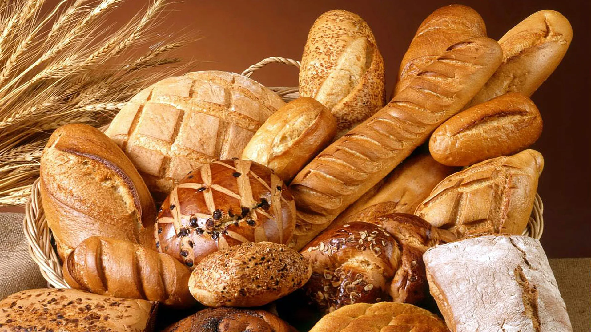
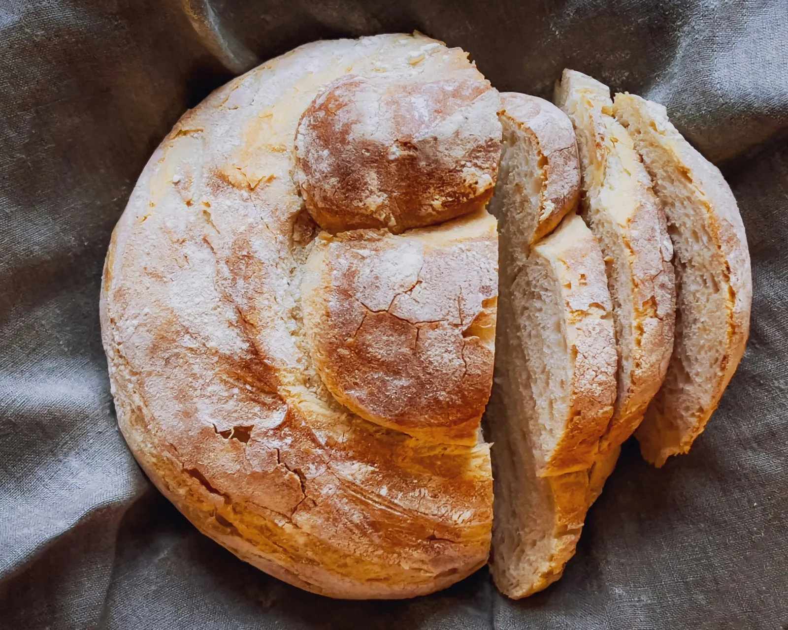
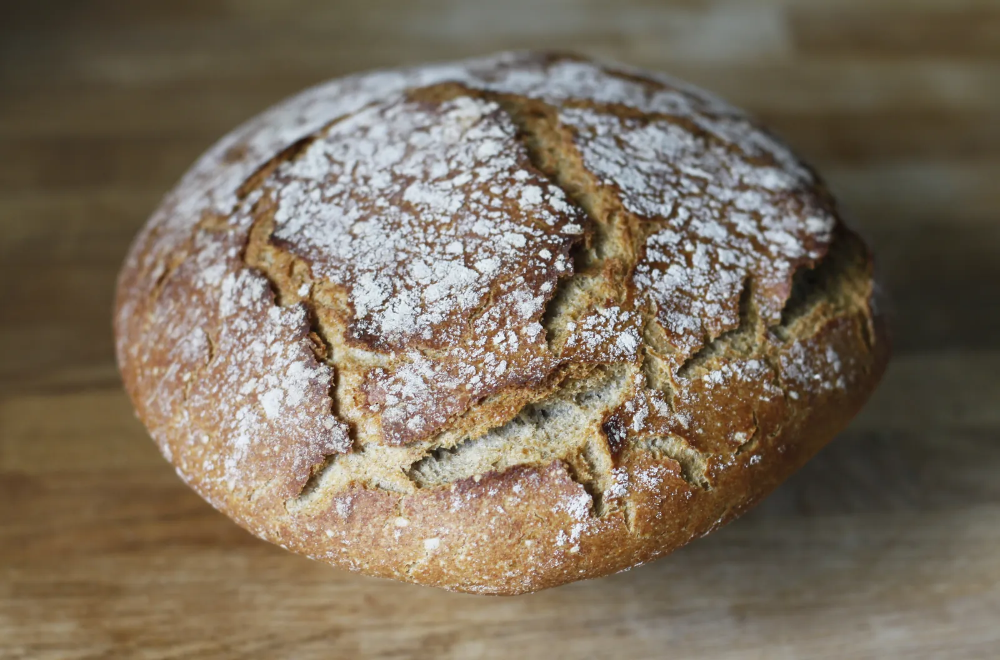
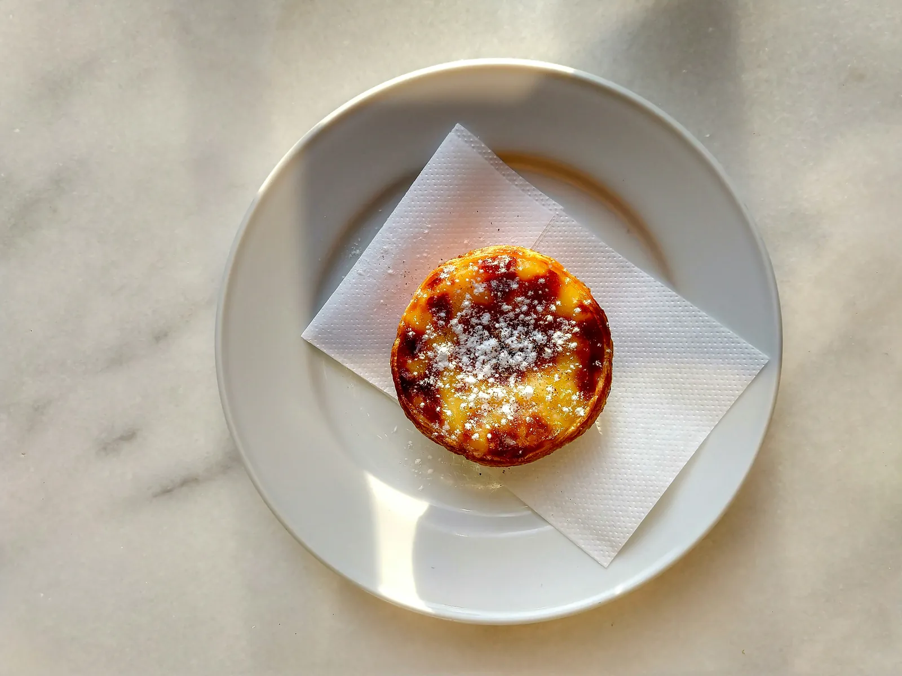
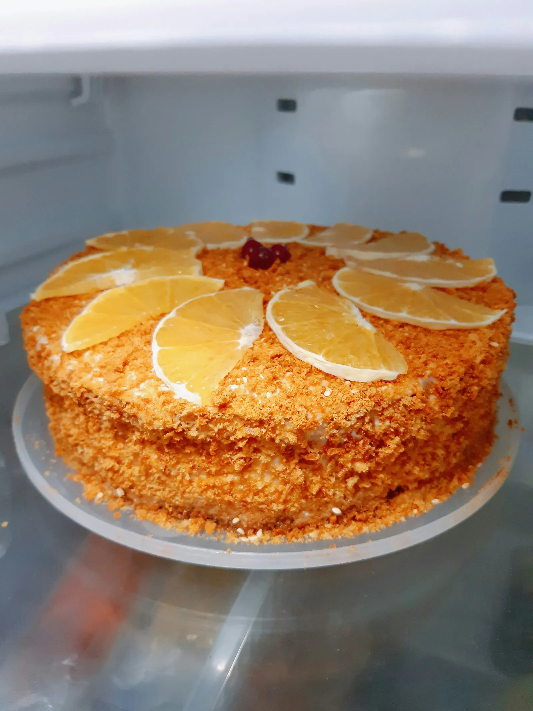
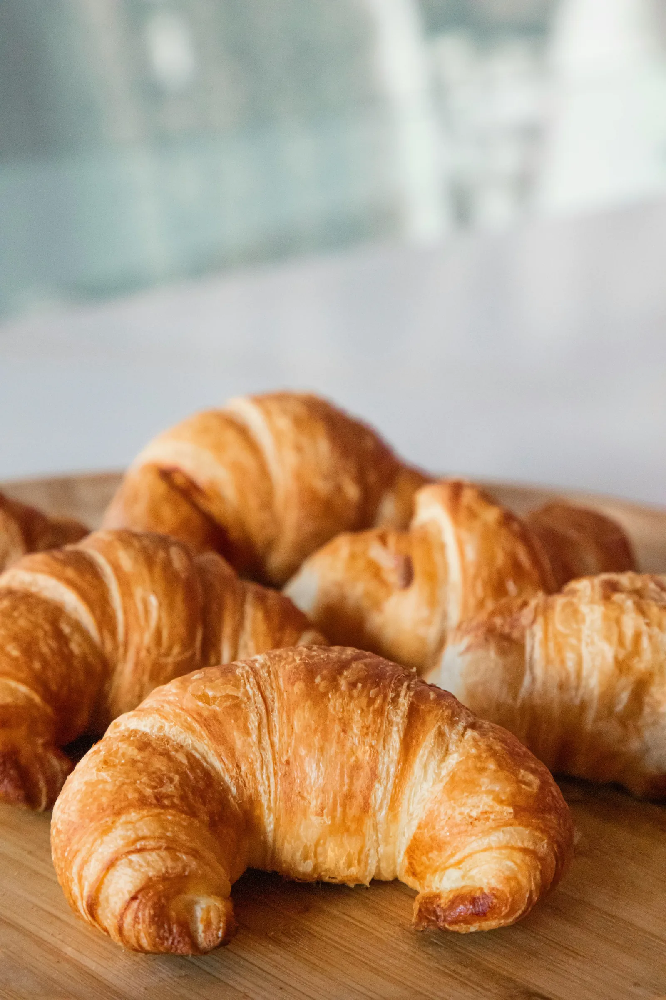
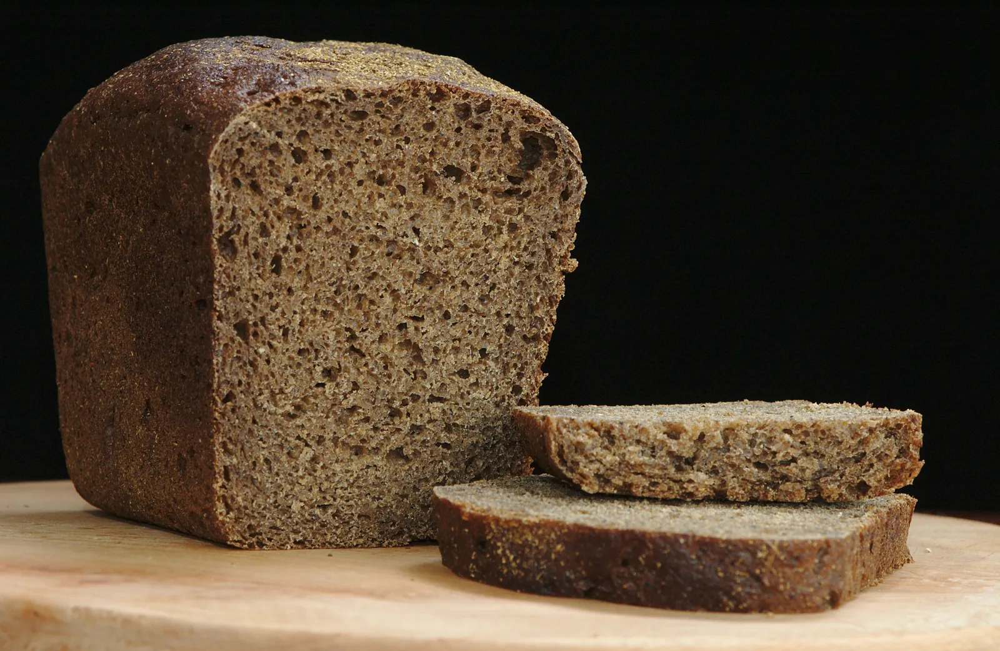
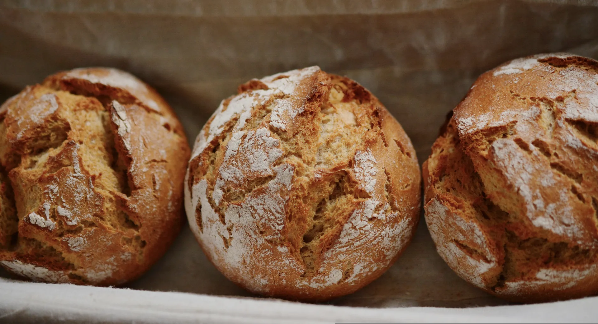

Padaria artesanal · Lisboa
Pão como antigamente, feito todos os dias
Receitas de família, farinhas portuguesas e fermentação natural de 24 horas. Acendemos o forno antes do sol nascer para que o pão chegue à tua mesa ainda morno.
- 24h de fermentação
- 100% farinha nacional
- Desde 1987

Do nosso forno para a tua mesa
Seis clássicos que fazemos todos os dias, com tempo, paciência e as mãos na massa.
-

O mais pedidoPão de massa-mãe
Côdea estaladiça e miolo húmido, com 24 horas de fermentação lenta.
4,50 € / 800 g
-

Broa de milho
Receita minhota com milho amarelo moído na pedra. Densa e perfumada.
3,20 € / unidade
-

QuentinhoPastel de nata
Massa folhada feita à mão e creme de ovos queimado na hora.
1,30 € / unidade
-

Bolo de laranja
Fofo e húmido, com sumo e raspa de laranjas do Algarve.
12,00 € / bolo inteiro
-

Croissant de manteiga
Folhado em 27 camadas com manteiga dos Açores. Leve e dourado.
1,80 € / unidade
-

Pão de centeio
Rústico e escuro, com centeio de Trás-os-Montes. Dura vários dias.
3,90 € / 600 g
A nossa história
Três gerações à volta do mesmo forno
Em 1987, a avó Rosa acendeu pela primeira vez o forno a lenha numa pequena loja de bairro, em Lisboa. Fazia broa às segundas, pão de centeio às quintas e, ao domingo, o bolo de laranja que ainda hoje vendemos com a mesma receita.
Hoje é a neta, Inês, quem chega às quatro da manhã para alimentar a massa-mãe. Mudou o bairro, mudaram os clientes, mas o essencial continua igual: ingredientes honestos, tempo e muito carinho.
— Família Rosa
História fictícia criada para efeitos de demonstração.

-
Ingredientes locais
Farinhas de moinhos portugueses, ovos de quintas da região e fruta da época.
-
Fermentação lenta
A nossa massa-mãe tem mais de 30 anos e cada pão descansa pelo menos 24 horas.
-
Feito à mão
Amassamos, moldamos e cortamos cada peça à mão. Nenhuma é igual à outra.
Especial da semana
Pastéis de nata · leve 6, pague 5
Para a mesa de domingo ou para adoçar o escritório. Válido em loja e nas encomendas.
O que dizem os vizinhos
Avaliações de exemplo, criadas para demonstração.
★★★★★
“O pão de massa-mãe é o melhor que já comi em Lisboa. Passo cá todas as manhãs antes do trabalho.”
★★★★★
“Os pastéis de nata saem quentinhos às 8h. Atendimento simpático e cheira a padaria de aldeia.”
★★★★★
“Encomendei o bolo de laranja para o aniversário da minha mãe. Toda a gente pediu a receita!”
Vem visitar-nos
Estamos no coração do bairro, a dois passos do elétrico 28.
Horário
A verificar…| Segunda-feira | 07:00 – 20:00 |
|---|---|
| Terça-feira | 07:00 – 20:00 |
| Quarta-feira | 07:00 – 20:00 |
| Quinta-feira | 07:00 – 20:00 |
| Sexta-feira | 07:00 – 20:00 |
| Sábado | 07:30 – 14:00 |
| Domingo | 08:00 – 13:00 |
Encomendas
Liga-nos até às 18h da véspera e deixamos tudo pronto a levantar.
21 000 0000 (número fictício)